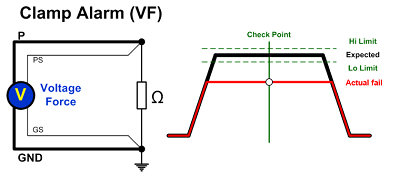
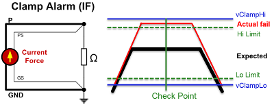
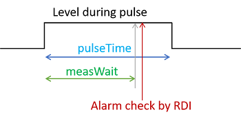
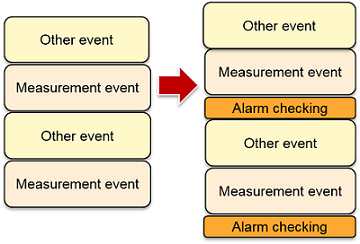
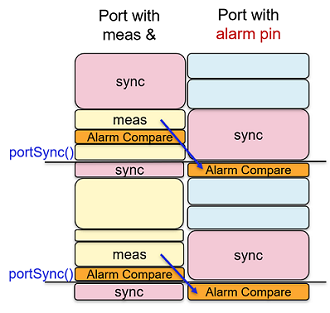

SmartRDI: Alarm handling for DCVI
SmartRDI features alarm handling for DCVI channels by inserting compare events between measurements and judging pass or fail based on alarm limit values set in the alarm setup file.
The following sections are available in this topic:
Overview
SmartRDI handles alarms in vForce, iForce, and vPulse or iPulse modes.
In the vForce mode, the voltage is checked and compared whether it is settled around the expected force value. The following image demonstrates the concept.

In the iForce mode, the voltage is checked and compared whether it is within the clamp low and high values and the setup limits. The following image demonstrates the concept.

After the compare, if the actual value is not in the range of the limit values specified in the alarm setup file, SmartRDI reports an alarm in the report window.
For vPulse and iPulse, the alarm check is added to the level of the pulse after measurement.
rdi.dc(id).pin(pinA).iPulse(300 mA, 0 mA, 300 us).vClamp(-1 V, 3 V).vMeas().measWait(270 us).execute();

Applicable pins
SmartRDI supports pins from the following cards:
- DPS128-HC
- XPS256
If a pin is in one of the following status, the alarm checking cannot be applied on it:
- Disconnected
- High-impedance mode (HiZ)
Alarm compare event insertion
SmartRDI automatically inserts alarm checking events into bursts without changing the coding.

- Automatic setup of vMeasRange() for DPS128:
In SmartRDI 7.5.0, the alarm checking for DPS128 and PVI8 cards is a vMeasRange().measWait().vMeas().limit(lo,hi) event. This is because these cards need vMeasRange() to activate them entering the voltage measurement mode (vMeas mode).
In 7.5.1, SmartRDI will not add vMeasRange().measWait().vMeas().limit(lo,hi) in the following events:
- The first alarm event after RDI_BEGIN.
- The first alarm event after a vForce change.
- The first alarm event after an iMeasRange() user-defined or added automatically by SmartRDI alarm handling.
-
Automatic setup of iMeasRange() for DPS128:
In SmartRDI 7.5.0, if a user-defined iMeas() is executed on an alarm pin, SmartRDI will generate a warning that tells you to call an iMeasRange() command first before the iMeas() command within the same execute() action.
In 7.5.1, SmartRDI automatically adds the iMeasRange() command for you in the code when both of the following conditions are met:- iMeas() is in the voltage measurement mode (vMeas mode).
- The vMeas mode (vMeasRange) has already been set by alarm handling.
- After a runtime vForce or vClamp value has been performed on a pin, the alarm compare event will not be added for the pin until the next fixed vForce or vClamp value appears. The reason is that the target value has been changed.
-
rdi.func("id"): Inserts a compare pattern after the current pattern.
-
rdi.smartVec("id"): Inserts a compare pattern after the current pattern.
-
rdi.tmu("id").pin("digital"): Inserts a compare pattern after the current ARM pattern.
-
rdi.tmu("id").pin("DCS"): Insert a compare event inside the current pattern after ARM event.
-
rdi.dc("id").pin("DCS"): Insert a compare event inside the current pattern after MEAS event.
Alarm handling on ports
SmartRDI 7.5.0 does not generate alarms for pins that are not in the same port of measurement.
SmartRDI 7.5.1 can generate alarms not only for the pins that are in the same port of measurement also for pins that are not in the same port. This means a measurement also can trigger the alarm checking on another port besides its own. After the measurement, the alarm checking event will be added to the port right after a portSync() event.

The alarm will be added after the first action done in the "alarm" port.
SmartRDI 7.5.2 allows the inserted alarm checking event to trigger a hidden port synchronization after alarm compare.
RDI_BEGIN(); rdi.port(A)... rdi.port(A)... // Measurement rdi.portSync(); // NO alarm event on port B because NO action on port B before the portSync() above. rdi.port(B)... // Port B action rdi.port(A)... rdi.port(A)... // Measurement rdi.portSync()... // Alarm event on port B. RDI_END();
Alarm handling and connection sets
Connection sets allow you reusing pins with another name or configuring pins that are otherwise used as gang group. Reusing channels in gang configurations is called "Ganging on the fly".
Connection sets are defined in the Connection Set column of the Digital Pins editor. An empty string parameter defines the default connection set.
For pins that use connection sets, pattern containing DC events must be set up as a multiport burst. A port can only contain pins with the same connection set or only pins with the default connection set. The use of a multiport timing is required if connection sets are defined for the related pins.
- If you use connection sets in combination with a single-port pattern, you must ensure that all pins defined by the currently active alarm set are in the default connection set.
- If alarm handling is required for pins that are defined for another connection set, you must use multiport programming and assign the pins of the other connection set to a separate port.
Alarm checks disabled by current threshold
Starting from SmartRDI 7.5.3, you can define a current threshold to disable alarm checks globally or per pin.
In the alarm setup file, you can use GlobalDisableAlarmIth to define a global current threshold value for globally disabling alarm checking actions; or use DisableAlarmIth to define a current threshold value per pin for disabling alarm checking on a specific pin.
In SmartRDI code, you can use rdi.alarm().globalDisableAlarmIth() or rdi.alarm().pin(pinA).disableAlarmIth() to define a current threshold value. See the following example.
rdi.alarm().globalDisableAlarmIth(5 uA);
rdi.dc().pin("FVI01").vForce(1).iClamp(-1 mA,1 mA)
.pin("FVI02").vForce(2).iClamp(-2 uA, 2 uA).execute(); // Alarm checking on FVI02 is disabled.
RDI_BEGIN();
rdi.....execute(); // Any measurements that trigger alarm checking on FVI01, not on FVI02.
rdi.dc().pin("FVI02").iForce(1 mA).execute(); // 1 mA > 5 uA, alarm checking on FVI02 is enabled.
rdi.....execute(); // Any measurements that trigger alarm checking on FVI01 and FVI02.
DI_END();
Application
To use the features of alarm handling for DCVI, you must first add two keywords in the RDI_Configure file:- ALARM_HANDLING_DCVI_ENABLE: Enable the alarm handling. The default value
is FALSE.
This keyword is a general switch of alarm handling. If you set it to FALSE, NO actions related to alarm handling for DCVI will take effect.
An alarm setup template file will be generated in the testmethod folder when the alarm handling is enabled in the RDI_Configure file. See Alarm setup file for the template.
- ALARM_HANDLING_DCVI_SETUP_FILE: Specify the path where your alarm setup file is stored. You can use different alarm handling setups for different testflows as you can use RDI_CONFIGURE_FILE to specify a RDI_Configure file for each testflow.
Second, you must have created an alarm setup file or several alarm setup files by following limit setting rules. See Alarm setup file and Limit setup of alarm checking for more information.
Third, you can add alarm handling commands to your test method. This is optional.
You must add the alarm result retrieval and data log to the data log function used in the test method code.
Finally, build and run your test program.
Alarm checking on pins using runTimeVal()
...
rdi.runTimeVal("rtvForce", rtvForce);
rdi.dc().pin("rtvPin").vForce(0 V).iClamp(50 uA).execute();
RDI_BEGIN();
...
rdi.dc("id").pin("rtvPin").vForce("rtvForce").iClamp(50 uA)
.vMeas().measwait(100 us).execute();
...
RDI_END(); The limits for alarm checking events are based on vForce/vClamp runtime values. RDI will update the values during execution.
Functional changes
- Introduced in SmartRDI 7.5.0
- SmartRDI 7.5.1: Measurement can trigger alarm checking on other ports besides its own.
- SmartRDI 7.5.1: Alarm handling can add alarm checking to the level of pulse after measurement.
- SmartRDI 7.5.1: Alarm handling can automatically handle vMeasRange() and iMeasRange() on DPS128 and PVI8 cards.
- SmartRDI 7.5.2: Alarm checking can trigger a hidden port synchronization with portSync() after alarm compare.
- SmartRDI 7.5.3: Alarm checking can be disabled by current limits.
- Introduced in SmartRDI 7.10.3